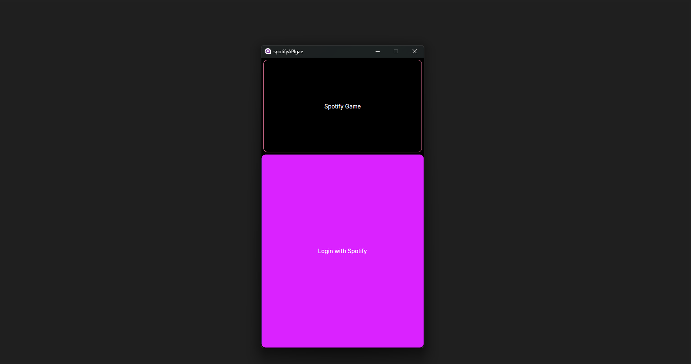
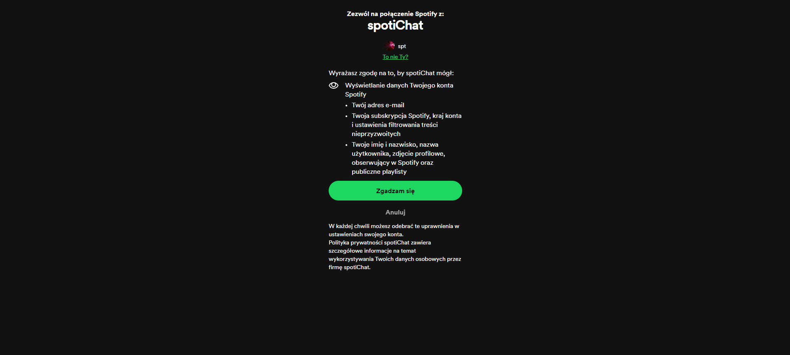
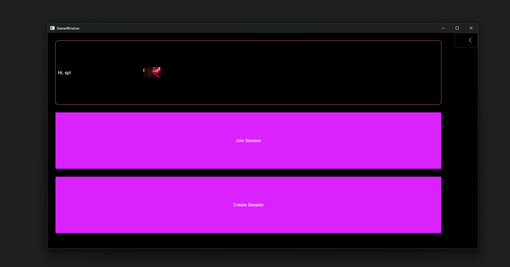
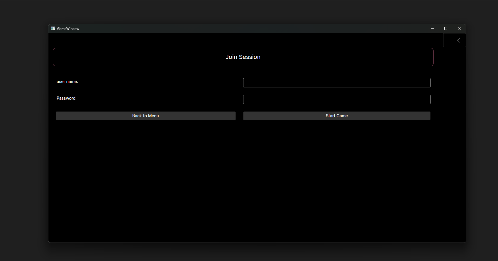

The Spotify Stats Game is a fun and interactive guessing game that allows players to test their
knowledge of their friends' music tastes. By leveraging the Spotify API for real-time data,
players are challenged to guess who is listening to a particular song or artist.
The game supports login and authorization through Spotify's OAuth 2.0, and once logged in,
users can see their Spotify username and profile photo. The game also supports session
creation and joining, allowing friends to play together. Additionally, there is a built-in chat feature
for players to communicate during the game.
Current Progress:
Login & Authorization: Fully functional Spotify login with OAuth 2.0.
User Data Retrieval: Fetches username and profile picture from Spotify.
Session Management: Players can create and join game sessions.
Chat Feature: Players can communicate with each other during gameplay.
Upcoming Improvements: Layout and UI/UX enhancements for a better player experience.
1 / 5

Login with Spotify acount
2 / 5

Spotify API OAuth2.0 authorization
3 / 5

Join or create game session, spotify API username and user profile photo request
4 / 5

Start game by providing existing session name or code and password
5 / 5
At current stage after joining session is working chat instead of game. Chat will be displayed on side during real game